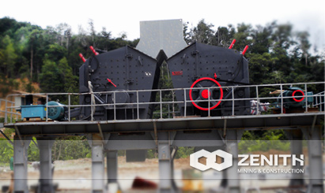
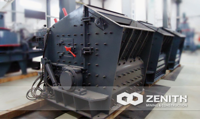
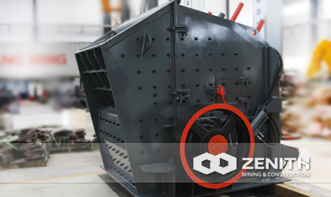
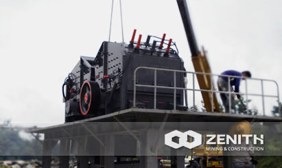

- 
- 
- 
- 
PFW Impact Crusher
Impact crusher often offer unbeatable performances in the secondary or tertiary crushing during the process of mining. Zenith's PFW impact crusher also can be widely used in the recycling application. Modern mining industry calls for crushers with high crushing ratio. However, Zenith's PFW impact crusher can meet this particular requirement. It has features heavy duty rotor design, unique hammer locking system, interchangeable wearing parts, and easy maintenance.
Overview and Application of PFW Impact Crusher
The PFW impact crusher is also called European style impact crusher, often used in the secondary crushing and fine crushing. It is very suitable for open-pit crushing in quarries. PFW series impact crushers are adopted by heavy-duty rotor design, unique hammer locking system, and interchangeable wearing parts. This series impact crushers provide customers low cost solutions, outstanding performance, good cubical shape, lowest operation cost per ton, and wide materials applications. For example, PFW Series impact crusher can be used to deal with glass, coal, cement, quartz, feldspar, calcite and all kinds of ore-bearing stones, etc. Nowadays, PFW Series impact crushers produced by Zenith are widely used in the building, cosmetics, paper, plastic, lacquer, toothpaste, and pigment industries, etc.
PFW Impact Crusher Distinct features and advantages
- Simple structure, small size, high production capacity, low production cost;
- All bearings adopt the integrated cast-steel structure, which ensures the perfect match with crusher frame. Meanwhile, it greatly increases the radial intensity of bearing seat;
- High crushing ratio, so that it is able to simplify the crushing process and changes the three-stage crushing into two-stage or single-stage crushing and reduces the cost of the ore beneficiation plants.
- Operators can use the automatic open-top device so that they can quickly finish the replacement of wearing parts;
- Big and low material feeding mouth is convenient for arranging the production line and increasing the size of the material feeding;
The tacnology data
Two-curtain cavity hydraulic impact crusher:| Model | Rotor Φ×L (mm) | Feed Opening (mm) | Max Feeding (mm) | Capacity (t/h) | Power (kw) | Motor Model | Machine Size (mm) |
|---|---|---|---|---|---|---|---|
| PFW1214II | Ф1150×1400 | 1100×1430 | 500 | 130-200 | 4-132 | Y315M-4/132 | 2400×2310×2550 |
| PFW1315II | Ф1300×1500 | 1200×1530 | 600 | 180-320 | 4-160 | Y315L1-4/160 | 2700×2570×2800 |
| PFW1318II | Ф1300×1800 | 1200×1830 | 700 | 240-400 | 4-200 | Y315L2-4/200 | 2700×2870×2800 |
| PFW1415II | Ф1400×1500 | 1450×1530 | 800 | 240-450 | 4-200 | Y315L2-4/200 | 3000×2700×3070 |
| Model | Rotor Φ×L (mm) | Feed Opening (mm) | Max Feeding (mm) | Capacity (t/h) | Power (kw) | Motor Model | Machine Size (mm) |
| PFW1214Ⅲ | Ф1150×1400 | 570×1430 | 250 | 90-170 | 4-132 | Y315M-4/132 | 2550×2310×2100 |
| PFW1315Ⅲ | Ф1300×1500 | 625×1530 | 300 | 180-270 | 4-160 | Y315L1-4/160 | 2960×2570×2380 |
| PFW1318Ⅲ | Ф1300×1800 | 625×1830 | 300 | 220-300 | 4-200 | Y315L2-4/200 | 2960×2870×2380 |
| PFW1415Ⅲ | Ф1400×1500 | 800×1530 | 350 | 280-350 | 4-200 | Y315L2-4/200 | 3120×2650×2660 |